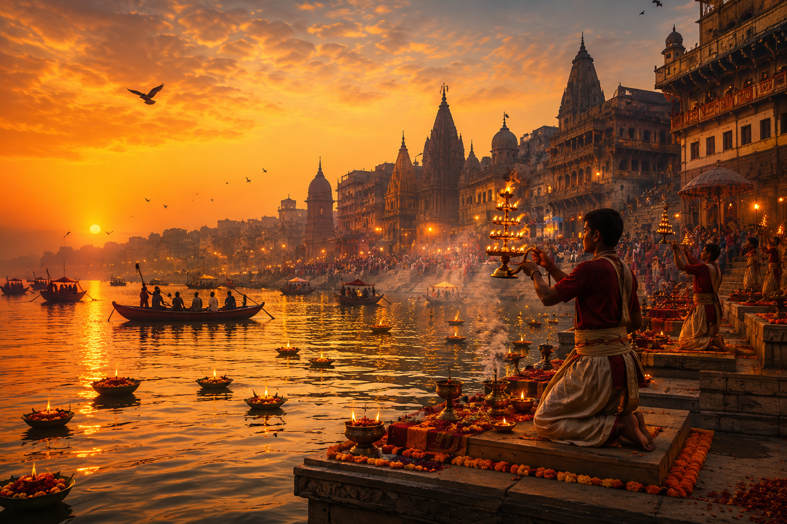

This image captures the essence of a culturally rich region through spirituality, rituals, and historic architecture.
The scene represents a spiritual hub known for its sacred river, large-scale evening rituals, and historic stepped riverbanks. These elements are widely associated with a specific region and are used intentionally to suggest identity without explicitly naming it.
The prompt was carefully engineered to highlight culturally distinctive elements such as rituals, architecture, and environment, while strictly avoiding any direct mention of location names. The goal was to rely entirely on visual storytelling so that the identity can be inferred rather than stated.
Hint: Think about a place famous for river rituals and ancient ghats.
Created using AI prompt engineering